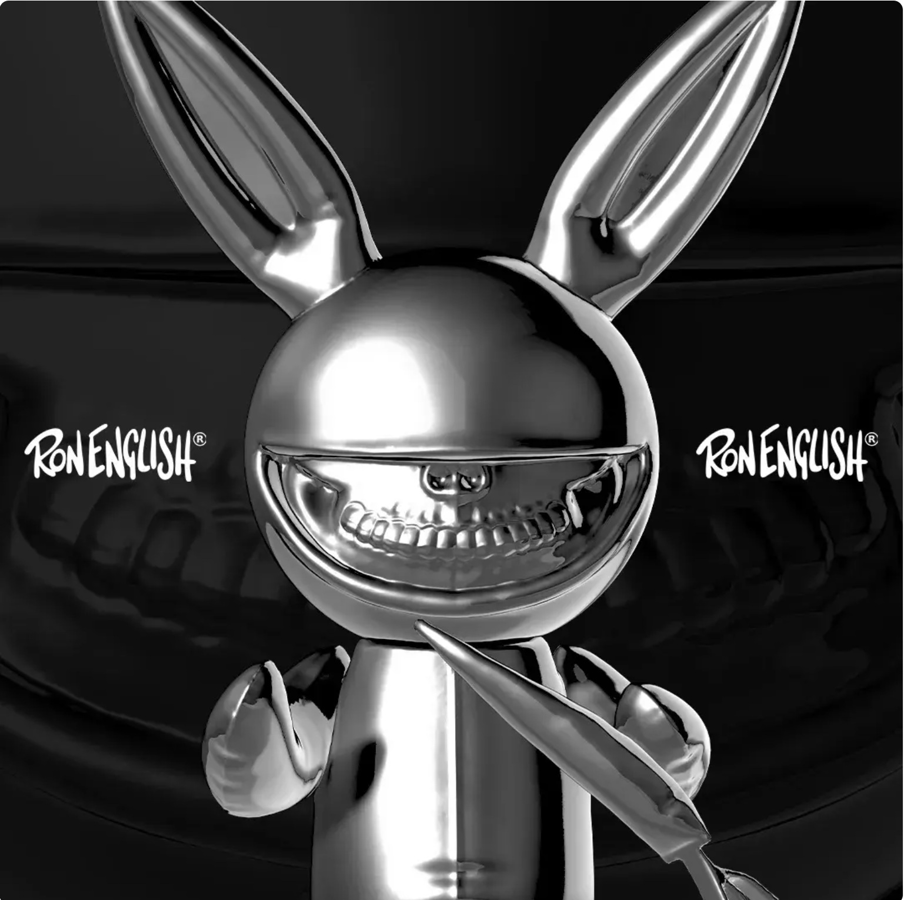
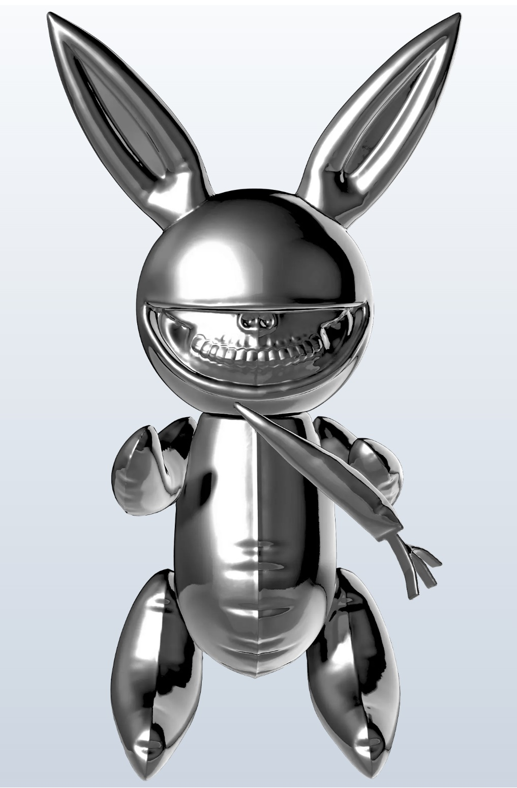

Title: Chrome Rabbit Grin
Date / release: October 4, 2025, 6:00 PM
Project / series: VeVe: Rabbit Grin Phygital Collectibles
VeVe series: Rabbit Grin
Medium: VeVe digital collectible / phygital sculpture release
Edition type: First Edition
Rarity: Secret Rare
Editions: 100
List price: $4,500.00
Market fee: 2.50%
Physical component: Matching limited-edition physical mirror-finished Rabbit Grin sculpture
Platform: VeVe
Work ID: RE-012079
Rarity Editions: 106
Editions in Circulation: 106
Burned Editions: 0
Withheld Editions: 0
Sold Editions: 106
Remaining Editions: 0
First Available Edition: #1
Season: 10
Daily MCP Points: 6
License: Ron English
Brand: Rabbit Grin
Series: Rabbit Grin Series
Drop Type: Standard Drop
VeVe Page: https://www.veve.me/collectibles/en/collectibles/8d4aff97-1808-4ced-82e3-9c13f7995221
Additional View
